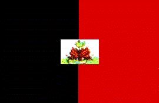
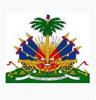

Haití
|  |  |
Información general
Nombre oficial: República de Haití
Área: 27 750 km²
Costas: 1 771 km
División política: 9 Departamentos
Departamento Capital
- Centre Hinche
- Grande Anse Jérémie
- L'Artibonite Gonaives
- Nord Cap-Haitien
- Nord-Est Fort Liberté
- Nord-Ouest Port-de-Paix
- Ouest Port-au-Prince
- Sud Les Cayes
- Sud-Est Jacmel
Unidad monetaria: Gourde
1 Gourde = 100 céntimos
Idiomas: Francés (oficial); creole y español (no oficiales)
Fiesta nacional: 1 de enero, Día de la Independencia
Gentilicio: Haitiano
Hora oficial: GMT -5 horas (normal), -4 horas (verano)
Miembro de: ONU, OEA, CARICOM (observador)
Curiosidades
Entre las islas menores que pertenecen a Haití está la de Tortuga que sirviera como refugio de piratas durante el siglo XVII.
En 1804 Haití fue el primer país independiente de América Latina, la primera república negra del mundo y el primer imperio poscolombino en América.
Información adicional en Internet.
Perfil
Ecónomico
Perfil Demográfico
Población: 8.300.000 hab.
Densidad de población: 299 hab/km²
Perfil Cultural
Alfabetismo: 49 %
Religión:
- Católicos: 79,2%
- Protestantes: 15,0%
- No religiosos: 1,8%
- Otros: 4,0%.
Lugares declarados patrimonio mundial por la UNESCO
- Ciudadela Sans Souci y Ramiers (Parque Histórico).
Sistema de Gobierno
Constitución vigente: 29 de marzo de 1987
Sistema ejecutivo: Presidente (Jefe de Estado, electo por sufragio universal para un término de cinco años), Primer Ministro y gabinete.
Sistema legislativo: Cámara de Diputados (ochenta y tres miembros) y Senado (veintisiete miembros), elegidos por sufragio universal para un término de cuatro años.
Sistema judicial: Corte de Casación (magistrados elegidos por diez años), cortes civiles y juzgados.
Aproximación histórica
Situada al oeste del estrecho de Máis, o Paso de los Vientos, que la separa de Cuba, se encuentra Haití.
Habitada originalmente por taínos, ciguayos, lucayos y caribes, fue descubierta por Colón en 1492.
Fue cedida a Francia por España en 1697 y se convierte en el siglo XVII en una colonia francesa que exporta azúcar, café y cacao.
En 1801, el esclavo emancipado Toussaint Louverture asume la Gobernación General pero es depuesto y asesinado por los franceses.
El líder Jacques Dessalines organiza un ejercito y vence a los franceses en 1803 y al año siguiente se declara la independencia y Dessalines se proclama emperador y el país inicia una época de inestabilidad política en que es dividido en dos y la parte oriental (la actual República Dominicana) es ocupada por España.
En 1915 es ocupada por los Estados Unidos de Norteamérica que permanece en Haití hasta 1934.
A partir de 1957 se instaura la feroz dictadura de Francois Duvalier que muere en 1971 y es sustituido por su hijo Jean Claude Duvalier que es derrocado por un golpe militar en 1986. A partir de esa fecha el país atraviesa una nueva crisis pues los militares mantienen el duvalierismo sin Duvalier.
Luego de un período de gran agitación, el padre Jean Bertarnd Aristide gana las primeras elecciones presidenciales libres en diciembre de 1990, pero es depuesto por un nuevo golpe militar en 1991.
La OEA, la ONU y los Estados Unidos de Norteamérica imponen sanciones militares a Haití, para forzar el regreso de Aristide al poder.
La inestabilidad y todo el período de corrupción administrativa han llevado a Haití a convertirse en uno de los países más atrasados del continente y del mundo.
Desde el punto de vista geográfico la mayor parte del territorio de Haití es montañoso. Su capital Port-Au-Prince tiene más de 700 000 habitantes.
«-- ir al comienzo
«-- regresar